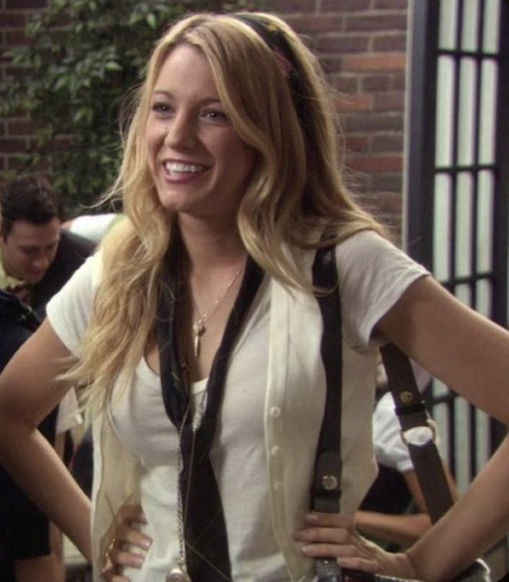

Blair Waldorf
Leighton Meester
Blair es una adolcencente ambiciosa y elegante, busca mantener el control dentro de su círculo social. Representa el poder, la tradición y la obsesión por el estatus.

Serena Van Der Woodsen
Blake Lively
Serena es una adolecente problematica, es dulce pero

Nate Archibald
Nate es

Chuck Bass
Chuck es el joven más poderoso de la cuidad

Dan Humphrey
Dan se presenta como un personaje excluido, el vive en Brooklyn y
Lily Van Der Woodsen
Lily es la madre de Serena y Eric, ella cree que el estatus social y ... son las cosas más importantes y es capaz de todo con tal de cuidar a sus hijos